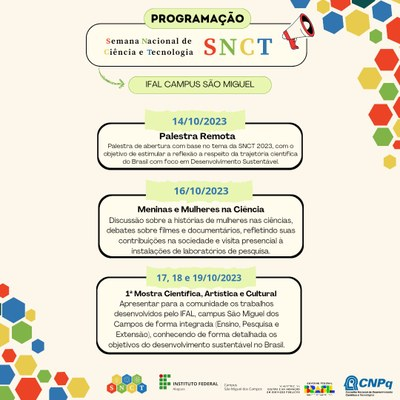

Na unidade São Miguel, a programação conta com palestras, rodas de conversa, oficinas, apresentações culturais, além da realização da 1ª Mostra Científica, Artística e Cultural do Campus. Ao todo, serão três dias de portas abertas para receber a comunidade. Durante o período, serão apresentados os projetos de pesquisa, ensino e extensão desenvolvidos pelo campus, bem como experimentos nos laboratórios de Biologia, Química, Física e Espaço 4.0.
Os estudantes da unidade também apresentarão os trabalhos desenvolvidos com base nos Objetivos de Desenvolvimento Sustentável (ODS’s), pois o tema central da SNCT 2023 é “Ciências Básicas para o Desenvolvimento Sustentável”.
Trata-se da primeira vez que o campus foi contemplado pelo edital. O projeto foi desenvolvido em parceria pelas coordenações de Pesquisa, Extensão e Ensino junto ao Grupo de Pesquisa em Educação, Sociedade, Trabalho e Tecnologia (GPESTT) e todos da unidade. A proponente foi a professora Flávia Bartira.
A docente reforça que ao longo do evento haverá premiação para as equipes mais bem avaliadas, além de medalhas e troféus. “A equipe primeira colocada será premiada pela prefeitura de São Miguel dos Campos, através da Secretaria de Desenvolvimento Econômico, da Ciência, da Tecnologia e da Inovação (SEDECTI) com um passeio histórico, cultural de barco pelo Rio São Miguel”, detalhou Flávia.
Ainda durante a semana, o campus realizará, de forma concomitante, o 11º Encontro Regional de Saúde e Segurança do Trabalho (ERESST), sob a coordenação do curso técnico subsequente de Segurança do Trabalho e o 1º Encontro Regional de Informática (ERINFO), sob a coordenação do curso médio integrado de Informática para Internet.
